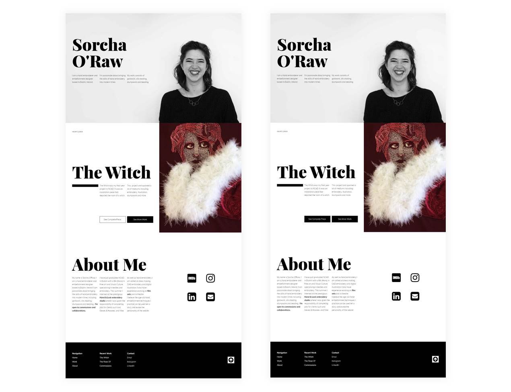
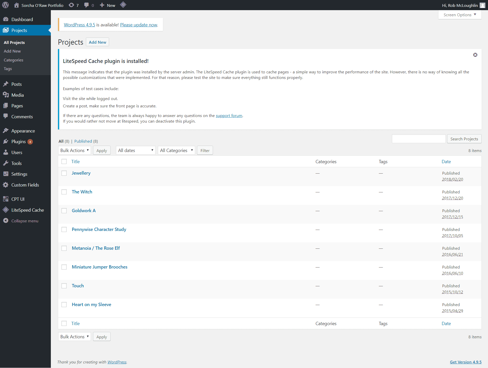
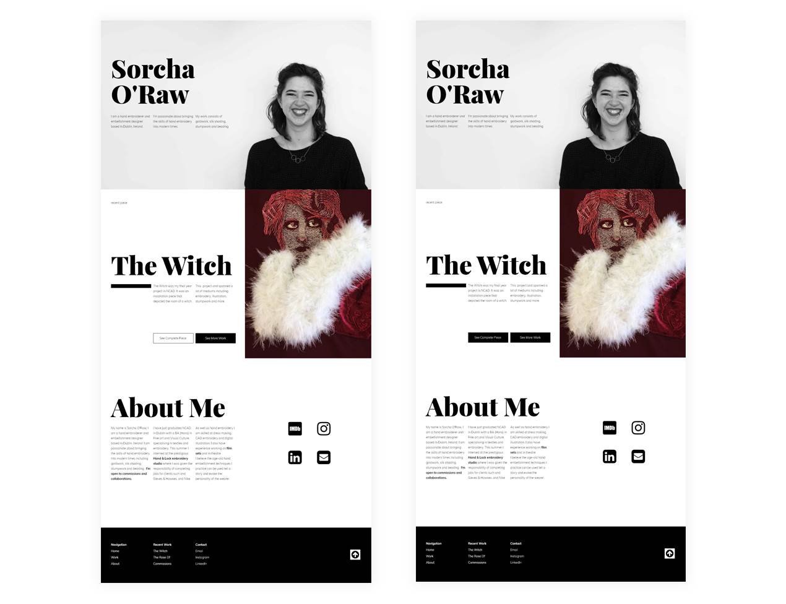
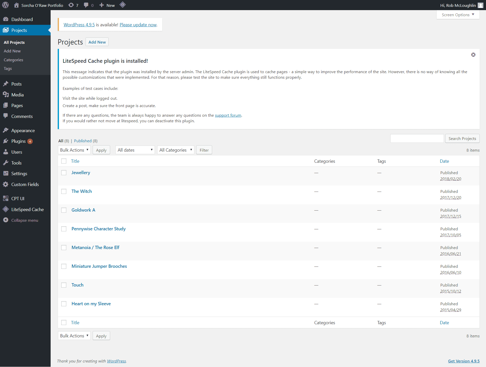

Intoduction // Justification
Sorcha O’Raw is an embroidery and textiles artist from Dublin, Ireland. Her work focuses on wearable items that often take a miniature scale. Sorcha had an existing portfolio site but it no longer met her needs as her work became more varied and numerous. It also fell victim to some usability issues on mobile. The existing content was mostly visual, with images taking centre stage, with some text to accent or explain the project.
Research
Research into other portfolios in embroidery and other fashion designers showed a spectrum of extremely “out there” portfolios to very minimal, easy to use sites that served to stay out of the way of the work. It became clear that finding a balance between the two was key. The experience has to memorable, while also not impeding the UX. The RHA Gallery in Dublin is a wide open, spacious gallery that uses reserved colour and subtle furnishing to allow the work to take centre stage, while contributing to a wider hedonic experience. These qualities made sense to me to bring to an online portfolio of work; it didn’t lean into any one genre or medium of work which would allow for more flexibility as Sorcha’s work continued to vary. It also meant that the UI wouldn’t get in the way of UX for users just looking to find work.
Low Fidelity
After I had a rough concept of how to structure the content, I started sketching and doing wireframes on paper. I tried it a few different ways but developed a basic wireframe through Adobe XD. I discovered that time lapses of wireframe drawing are HUGELY satisfying.
High Fidelity
High fidelity was done in a mix of Photoshop and XD. I’m enjoying XD, I find it does about 80% of what I want for high-fidelity mockups and is much faster than Photoshop to load/export/use. I still need Photoshop and it does always end up being my main tool, especially for such an image-heavy site as this one. A simple high contrast (hardly original) colour scheme was used to make the colour of the projects stand out, again based on the RHA.
Development
I developed the home page, work page and single project page using HTML, CSS and jQuery. I had ideas for subtle animated elements on the site to add some life and personality to the interface. Once the static pages were complete and in working orders, I moved the site over to WordPress to provide Sorcha with the tools to edit as much of the site as possible without having to enter any code. I found the Advanced Custom Fields plugin was fantastic for allowing customisation. Good UX is certainly important for the user, but it’s also important to consider the UX of the client! Image compression proved to be a challenge, as many of the images from the existing site had to be compressed so loading time wouldn’t be nightmarish.
Conclusion
Client was happy, designer was happy. The current site is an improvement from the last one in terms of usability and strength of brand and is easier to update moving forward.

 


